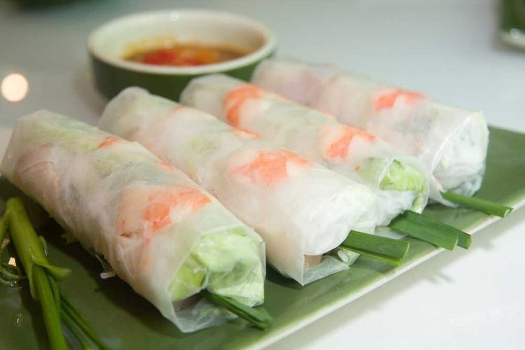

Vietnamese foods you need to try
Vietnamese food is distinct and unforgettable. Spread across street-side vendors and high-end restaurants, typical Vietnamese food tastes salty, sweet, sour and hot. Whether you fancy a lunchtime snack in Hanoi or want to check out the best restaurants in Ho Chi Minh City, Vietnamese cuisine is some of the tastiest in all of Southeast Asia, so there's no need to wonder what the best food to eat in Vietnam is – we've got it covered.
Goi Cuon (spring rolls)
Goi Cuon are translucent spring rolls packed with greens, coriander and minced pork or shrimp. A southern variation has barbecued strips of pork wrapped up with green banana and star fruit, and then dunked in a rich peanut sauce – every bit as tasty as it sounds.
Served cold, Goi Cuon are usually served as a starter before a main course at Vietnamese restaurants. If you travel to northern Vietnam then you may find that they're referred to as Nem Cuon. Whatever they're called, they're certainly delicious!

Goi Cuon is usually served as a starter in Vietnamese restaurants © Tochim/Shutterstock
Banh mi (Vietnamese/Saigon sandwich)
Banh mi is one of the most popular street foods in Vietnam – and once you've read what goes into it, you'll be desperate to try it out for yourself! The Vietnamese (or Saigon) sandwich was first created during French colonial rule during the 19th century. Banh mi uses a French baguette and is filled with a delicious selection of ingredients.
The baguette sandwich is filled with greens and a choice of fillings, including paté and usually pork. Other fillings include beef, chicken, liver and tofu. Banh mi is so good that it's gone on to be imitated around the world, from London to New York.

Banh Mi, Vietnamese street food - one of the top Vietnamese foods you need to try © prapass/Shutterstock
Banh xeo (sizzling pancakes)
These enormous, cheap and filling Vietnamese pancakes contains shrimp, pork, bean sprouts and egg. They are fried, wrapped in rice paper with greens and dunked in a fish sauce (Nuoc Cham) before eaten.
The best city to try Banh xeo (or "sizzling pancake") is Ho Chi Minh City. But it's also one of those snacks that you should stock up on if you're travelling by train or bus – the perfect accompaniment for those long journeys.
Talking of long journeys, if you're looking to experience the real Vietnam, you'll want to venture beyond the tourist trail.

Banh xeo is top-rated Ho Chi Minh City street food © AS Food studio/Shutterstock
Bun Cha (grilled meatballs)
Bun Cha is a Hanoi specialty. You’ll find bun cha at food stalls and street kitchens across the city. The pork is barbecued on an open charcoal brazier and served on a bed of cold rice noodles with assorted foliage and a broth.
This type of Vietnamese cuisine is usually eaten at lunchtime. It's been described as somewhat similar to meatballs or hamburgers, but we think that with its intriguing mix of flavours, there's not another taste like it!

Eat the best Bun Cha in Hanoi © Jiann/Shutterstock
Pho (noodle soup)
The country’s great staple dish is Pho (pronounced “fuh”). This noodle soup can be eaten at any time of day but is primarily eaten at breakfast. It originated in the north of the country but is now a national dish of Vietnam. A bowl of Pho consists of a light beef or chicken broth flavoured with ginger and coriander, to which are added broad, flat rice noodles and spring onions. Meat-wise, slivers of chicken, pork or beef are then added. Tofu is the main vegetarian option.
Pho in Vietnam can be found on almost every menu; once you’ve got your serving, squeeze a lime over it and add a dash of chilli flakes for an extra kick.
Pho soup is a typical Vietnamese recipe © KYTan/Shutterstock
Cha ca (Turmeric fish)
Seafood dishes stands above most other Vietnamese cuisine. Cha ca, reportedly created in Hanoi, is perhaps the best known. It sees white fish sautéed in butter with dill and spring onions, then served with rice noodles and a scattering of peanuts.
Da Nang is one of the best places to tuck into Vietnamese seafood dishes. Thanks to its waterfront position, Da Nang’s specialities are fish-based and is the perfect spot to try Cha ca. For a similar eat that’s popular in the local area, try Bun cha ca, a fishcake noodle soup.
Cha ca at a Vietnam restaurant © aomiw/Shutterstock
Com tam (Broken Rice)
Com Tam is a quick’n’easy street-stand favourite that is almost exclusive to Ho Chi Minh City. Made up of smaller pieces of rice, it's also known as Broken Rice, and was traditionally a leftover-style snack. The Vietnamese have managed to hone it into a renowned Ho Chi Minh street food snack.
Com Tam is served with either grilled/steamed/shredded pork (usually grilled), fish or simply a fried egg. And this being Vietnam food, it wouldn’t be complete without a squeeze of lime, a sprinkle of fresh herbs and a smattering of spring onion.
Com Tam, classic vietnamese food © Tonkinphotography/Shutterstock